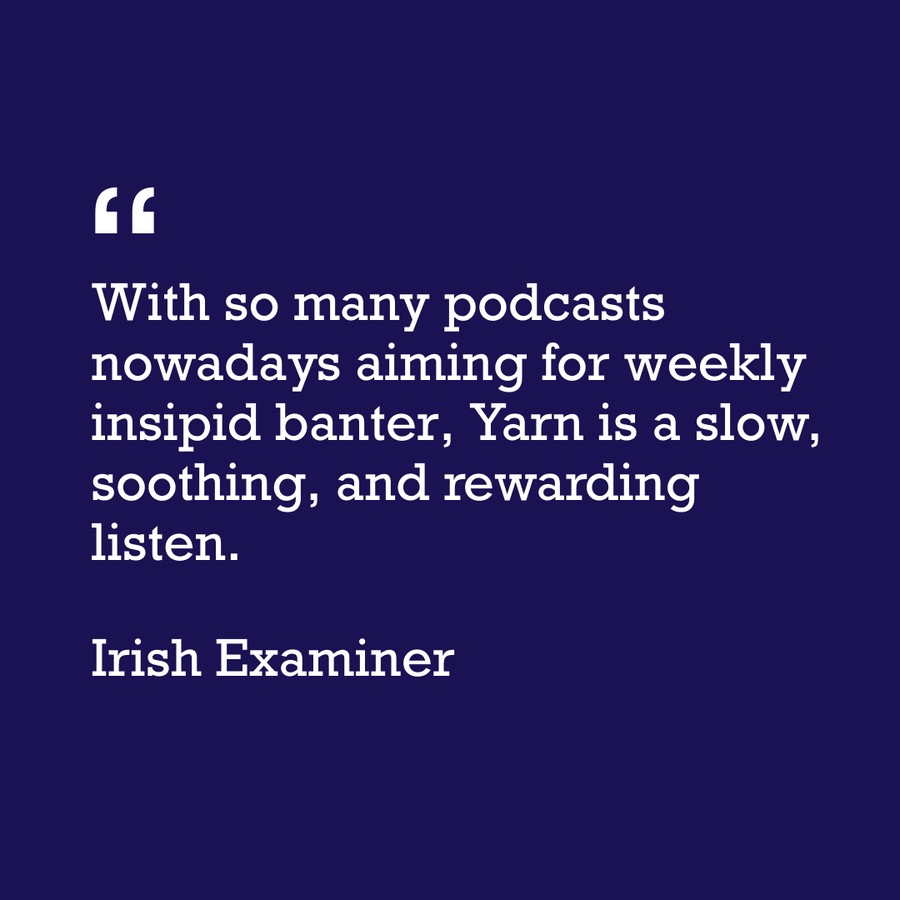

Press
Reviews, features and awards, from The Guardian to the Irish Examiner.
- The GuardianBest podcasts of the week
- Irish IndependentPodcast reviews: Grafters and trailblazers, a trio of unsung and everyday heroes, told with authority and panache
- Irish ExaminerPodcast Corner: Tale of Doonmore Hotel on Inishbofin makes for interesting Yarn
- Irish ExaminerPodcast Corner: A look behind the scenes at serving on an Irish jury
- Third Coast FestivalRe:sound #269 Lefty Disco
- Discover PodsPodcast Spotlight: Disability, A Parallel History, a Yarn Miniseries
- Irish CentralLISTEN: Our top 5 Irish podcasts for February
- Podcasts and Radio7 podcasts about World War II for history lovers
- The Kilkenny PeopleKilkenny man nominated in National Podcast Awards
- Signal AwardsWinner: Best Indie Podcast, Individual Episode, Bronze 2025
- Signal AwardsSignal Awards unveil 2025 finalists, spotlighting the icons and creators defining culture today
- Irish Podcast AwardsWinner: Best Factual Podcast 2022